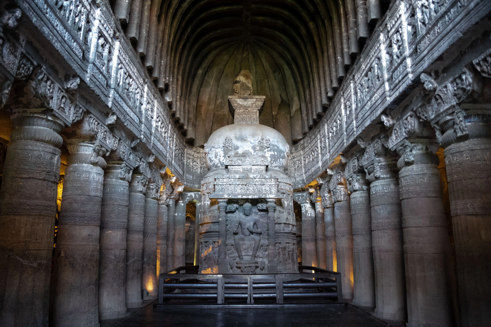

Ellora Caves
Ellora caves,
Another World Heritage Site that the town boasts of, are the Ellora caves, that one must not miss
while in Aurangabad. The sculptures here, represent elements of three religions and do so grandly
and beautifully.
These 34 monasteries and temples, extending over more than 2 km, were dug side by side in the wall
of a high basalt cliff, not far from Aurangabad, in Maharashtra. Ellora, with its uninterrupted
sequence of monuments dating from A.D. 600 to 1000, brings the civilization of ancient India to
life.




Ajanta Caves
Ajanta Caves, Ajanta and Ellora Caves Overview
Located around 99 km from the town of Aurangabad, lie the Ajanta Caves now included in the list of
UNESCO World heritage Sites. Ajanta caves depict the Buddhist culture and their stories through
various sculptures and paintings. It also takes you to the world of Jatakas.
The Ajanta caves is a set of 3rock-cutut Buddhist caves that date back to the period between 2nd
century BC and 650 CE.

Pitalkhora Caves
One of the earliest caves in Maharashtra, Pitalkhora Caves are located in Chandora hills, near
Bharmarwadi village, Aurangabad district. This 3rd-Century rock-cut Buddhist cave complex is the
largest group of monuments belonging to the Satavahana Dynasty. Also known as Brazen Glen, the caves
are made up of fourteen rock-cut structures which have fine architectural styles and paintings. Out
of these fourteen monuments, four are chaityas and the rest are viharas.

Elephanta Caves
A UNESCO World Heritage Site, Elephanta Caves is a specimen of rock-cut art and architecture from
the times of medieval India. The caves are located on the Elephanta or Gharapuri island which is
situated at a distance of 11 km from the city of Mumbai. You can reach the Elephanta Caves via a ferry ride
from Gateway of India. This collection of cave temples dates back to 5th to 7th centuries and most
of them are dedicated to Lord Shiva.

Pandav Leni
The Trirashmi Caves, or Nashik Caves, are a group of 23 caves carved between the 1st century BCE and the 3rd century CE, though additional sculptures were added up to about the 6th century, reflecting changes in Buddhist devotional practices. The Buddhist sculptures are a significant group of early examples of Indian rock-cut architecture initially representing the Early Buddhist schools tradition.